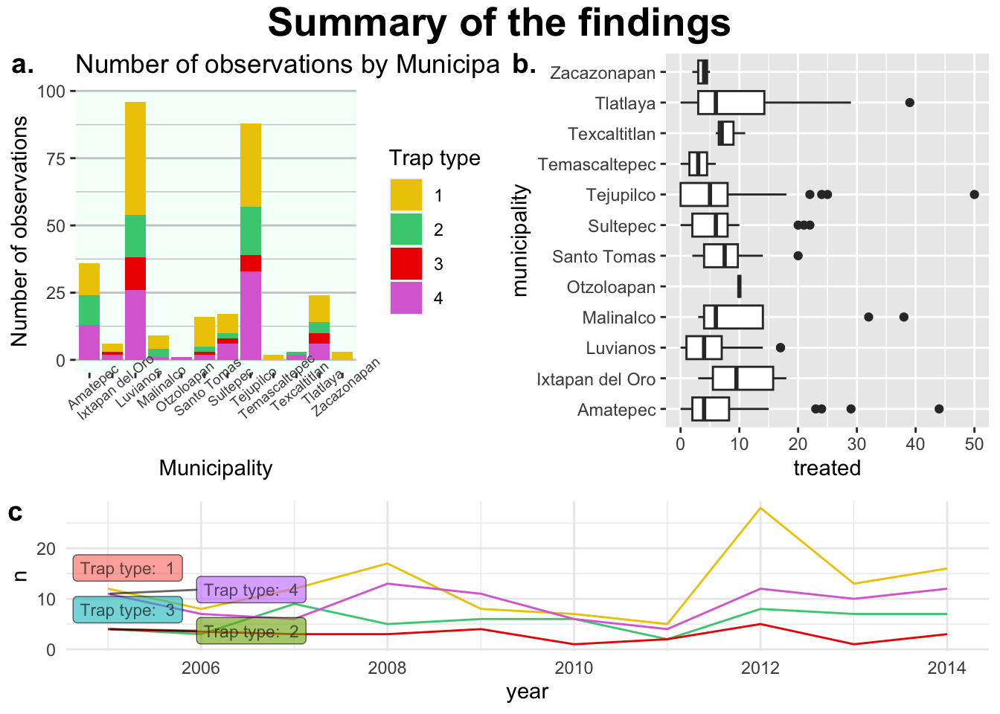
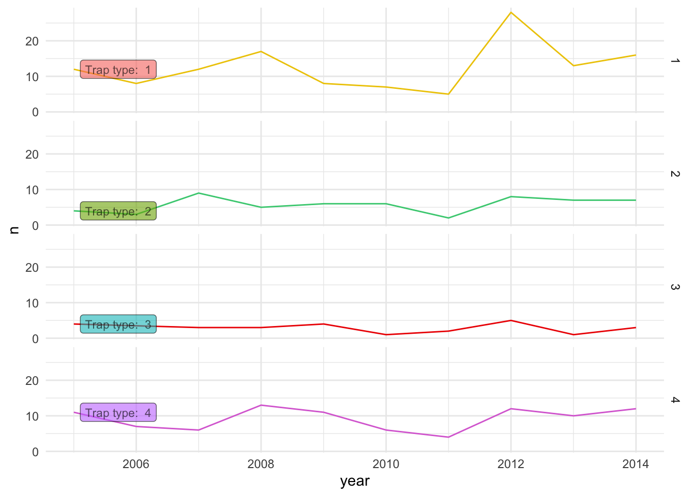
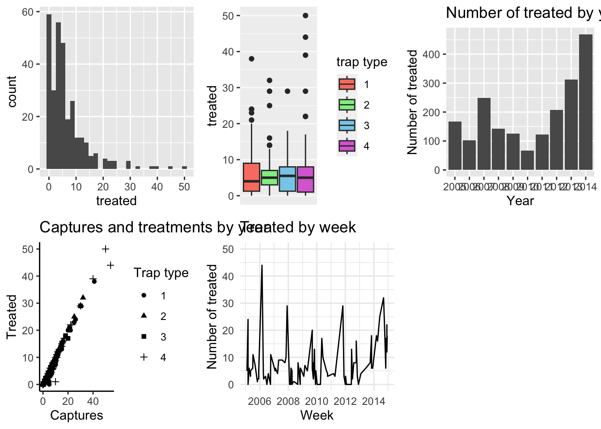

Figure arrangements
Cambiar a español  | Mudar para Português
| Mudar para Português 
1 Arranging the plots in a layout
Now that we have all the figures in a list, we can make arrangements
with our figures. For this we use the function ggarrange()
from the ggpubr library. The ggarrange() takes
multiple arguments, but the main one is the figures we want to arrange.
We can specify the figures in two ways, defining a list with all our
figures, or if we want specific figures we can define the figures one by
one. For example:
library(ggpubr) # load the library
ggarrange(plotlist = figures)
This might not be the best arrangement for the figures, since its too
much information, so we can arrange it in several ‘pages’. The way
ggarrange() organizes the figure is in a n x n grid. If not
specified, it will try to arrange the all the figures in a single grid,
but we can use the arguments ncol and nrow to
limit the number of elements per cell in our grid. For example:
ggarrange(plotlist = figures, ncol = 2, nrow = 1)## $`1`
##
## $`2`
##
## $`3`
##
## attr(,"class")
## [1] "list" "ggarrange"If we want to select specific figures, we will need to either delete them from the list, or just add them one by one. We can also add labels to later reference in our figure caption, for example:
toppanel <- ggarrange(
figures$bars, figures$box, # These are our figures
labels = c('a.', 'b.') # The labels
)
toppanel
We can also make arrangements with arrangements, for example:
p1 <- ggarrange(toppanel, figures$timeseries, ncol = 1, heights = c(2, 1), labels = c('','c')) # Add another figure at the bottom
p1
Finally we can add a general title for the arrangement:
p1 %>%
annotate_figure(top = text_grob('Summary of the findings', face = 'bold', size = 20))
Notice that the specification of the text uses the function
text_grob() which is a similar to the way we specify text
for the themes in ggplot.
2 Facets
Facets are a way of stratifying the data based on variables in the
data set, you can think about it in a similar way we have been using
groups. To create a stratified plot we can use the function
facet_grid() which will ask for a variable to go in the
rows and another for columns:
figures$timeseries +
facet_grid(rows = vars(trap_type))
figures$histogram <- captures %>% # The data we will use
ggplot() + # set the canvas
geom_histogram(aes(treated), fill = 'red4') + # We will create a histogram of the Age
facet_grid(
rows = vars(trap_type), # We will use the Sex variable for rows
cols = vars(municipality) # We use the Result variable for Columns
)
figures$histogram
3 Exercise
Now that you know some tools to look for information, you will have to make your figures on your own. If you want to make figures with the datasets we have been using you can do those, or you can use any of the code online to replicate them.
- Go to the Data to Viz website
- Identify a few figures that you would like to do (you can also do figures that we have previously done in the exercises)
- Make sure you label your figures!
- Experiment changing the colors, variables, themes etc…
- Replicate a few figures and put them in an arrangement.
At the end we will have a discussion where you can share your figures and troubleshoot any problems you might have had.
This lab has been developed with contributions from: Jose Pablo
Gomez-Vazquez.
Feel free to use these training materials for your own research and
teaching. When using the materials we would appreciate using the proper
credits. If you would be interested in a training session, please
contact: jpgo@ucdavis.edu